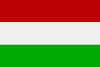

|
Länderinformationen Ungarn
1. Das Wichtigste auf einen Blick2. Sehens- und Hörenswertes
3. Politik & Gesellschaft
4. Schmeckenswertes
5. Medien
6. Reisetipps
1. Wissenswertes
|  | Hier
haben wir die wichtigsten Zahlen und Fakten zu Ungarn
und der ungarischen Sprache zusammengetragen. |
Wir freuen uns, dass Sie sich für einen Ungarischkurs von Sprachenlernen24 entschieden haben. Um Ihre Reisevorbereitungen zu erleichtern und Ihnen einen kleinen Vorgeschmack dessen zu geben, was Sie im Land der Magyaren erwarten wird, haben wir hier viele wissenswerte Informationen rund um Ungarn, über sehenswerte Reiseziele, seine Küche, Politik & Geschichte, die dort gesprochene Sprache und vieles mehr zusammengestellt.
 Ungarisch – eine uralische
Sprachinsel in einem
Ungarisch – eine uralische
Sprachinsel in einem
Meer indogermanischer Sprachen
Meer indogermanischer Sprachen
Eines der hervorstechenden Kennzeichen der ungarischen Sprache ist, dass diese Sprache so offensichtlich nicht mit den Sprachen seiner Nachbarländer verwandt ist. Wenn man zum Beispiel von Kroatien nach Serbien fährt und jemanden begrüßt, so sagt man in beiden Fällen „Dobro jutro.“ (dt. Guten Morgen.). Auch die Slowenen sagen in der Frühe Dobro jutro. In der Slowakei hört man Dobré ráno und reibt sich verschlafen die Augen. In einem weiteren Nachbarland Ungarns, der Ukraine, sagen Sie nach dem Aufstehen Доброго ранку. - Dobroho ranku.“ für Guten Morgen. All diese Ausdrücke klingen so gleich oder so ähnlich, weil all diese Sprachen zur gleichen Sprachfamilie, den slawischen Sprachen, gehören. In Ungarn aber werden Sie mit einem Jó reggelt! aus den Federn geworfen. Und das hört sich nun doch ganz anders an. Tatsächlich ist es auch so, dass Ungarisch zu einer ganz anderen Sprachfamilie gehört als alle Sprachen, die das kleine Land umgeben.
Eigentlich ist Ungarisch eine bemerkenswerte Sprachinsel innerhalb Europas. Das Ungarische zählt man zu den uralischen Sprachen. Die Familie der uralischen Sprachen stammt – wie der Name schon sagt – aus den Gebiet des Ural und dort vermutet man auch die Wurzel all dieser Sprachen im sogenannten Proto-Uralischen, das vor über 7.000 Jahren entstanden ist. Heute haben sich diese Sprachen in zwei Gruppen ausdifferenziert. Die wesentlich kleinere Gruppe von beiden (mit vielen Sprachen, die nur noch ganz kleine Sprechergemeinschaften haben), ist die samojedische Sprachfamilie – zu ihr zählen Sprachen wie zum Beispiel das Nenzische oder das Selkupische. Gesprochen werden diese kleinen – oft von Aussterben bedrohten Sprachen – in Sibirien.
In Sibirien findet man auch die beiden Sprachen, die am engsten mit dem Ungarischen verwandt sind (welches ebenfalls zur zweiten, größeren Gruppe der uralischen Sprachen zählt): das Mansische und das Chantische. Die Gruppe, der diese drei zugeordnet werden nennt man finn-ugurische Sprachen. In dieser Gruppe findet man auch Finnisch und Estnisch.
Vielleicht denken Sie jetzt darüber nach, ob sich ein Ungar, ein Finne und ein Este verstehen könnten, wenn man sie gemeinsam an einen Tisch bitten würde? Nun, der Finne und der Estländer könnten einander so in etwa verstehen, wenn ein jeder in seiner Muttersprache drauflosreden würde. Der Ungar aber müsste dabeisitzen und würde nichts verstehen. Denn 7.000 Jahre Sprachgeschichte und die räumliche Distanz zu den anderen finn-ugurischen haben bewirkt, dass das Ungarische einen vollkommen unterschiedlichen Wortschatz entwickelt hat als Finnisch und Estnisch. Was die drei Sprachen verbindet und als Sprachfamilie kennzeichnet, sind Merkmale des Sprachbaus (also Gemeinsamkeiten auf der Ebene des grammatischen „Funktionierens“ der Sprachen). Alle drei Sprachen haben einen agglutinierenden Sprachbau. Was genau man hierunter versteht, erklären wir Ihnen jetzt:
 Alles
wird hinten drangeklebt – Ungarisch ist
Alles
wird hinten drangeklebt – Ungarisch ist
eine agglutinierende
Sprache
eine agglutinierende Sprache
Um Ungarisch lernen und verstehen zu können, müssen Sie zuallererst verstehen, was eine agglutinierende Sprache ist. Das Wort agglutinieren stammt aus dem Lateinischen und bedeutet verklumpen oder auch verkleben. Zentrales Prinzip dieser Art des Sprachbaus ist das Suffix. Ein Suffix ist eine Nachsilbe, die an ein Wort hinten angefügt wird (angeklebt wird) und so die Bedeutung des Wortes verändert, erweitert und näher bestimmt.
Am besten wird Ihnen dieses Prinzip an einem Beispiel klar: Nehmen wir das ungarische Wort für Tisch: asztal. Wenn Sie dieses Wort in die Mehrzahl setzen möchten, so hängen Sie hinten die Endung -ok als Kennzeichen für den Plural an. Die Tische ins Ungarische übersetzt heißt also asztalok. Wenn Sie aber zum Beispiel eine Ortsangabe machen wollen, und sagen möchten, dass etwas auf dem Tisch liegt, so heißt das auf Ungarisch asztalon.
Das Prinzip des Agglutinierens im Ungarischen
|
|
asztal |
der Tisch |
asztalok |
die Tische |
asztalon |
auf dem Tisch |
Das Prinzip des Agglutinierens kann man also folgendermaßen zusammenfassen: An einen Wortstamm, der nicht verändert wird, tritt ein Suffix, das den Wortstamm näher bestimmt.
Wie Sie am obigen Beispiel erkennen konnten, werden die Wörter im Ungarischen also immer länger, je mehr Informationen sie enthalten. Es gibt ganz viele unterschiedliche Arten von Suffixen, die man an ein Wort anhängen kann. Jeder Fall hat im Ungarischen zum Beispiel sein eigenes Suffix, an dem man ihn erkennen kann.
Im deutschen Sprachbau dagegen herrscht das Prinzip der Flexion vor. Das Wort flektieren stammt aus dem Lateinischen und bedeutet beugen. Bei einer flektierenden Sprache wird das Wort selbst verändert um eine Veränderung bzw. Erweiterung in der Wortbedeutung zu kennzeichnen.
 Wesentliche
Kennzeichen der ungarischen
Wesentliche
Kennzeichen der ungarischen
Sprache
Sprache
Damit Sie schnell einen Überblick darüber bekommen, was die ungarische Sprache ausmacht, haben wir hier eine Liste mit den wesentlichen Kennzeichen der Sprache für Sie zusammengestellt:
- Substantive im Ungarischen haben kein grammatisches Geschlecht. Sie müssen also nicht wie im Deutschen lernen, ob es der Auto, die Auto oder das Auto heißen muss.
- Ein ganz wichtiges Prinzip auf der Ebene der Wortbildung und der Agglutination ist die Vokalharmonie. Die Vokalharmonie stellt Regeln auf, nach denen hohe Laute ebensolche hohen Vokale nach sich ziehen – und auf tiefe Vokale folgen Suffixe mit tiefen Lauten.
- Im Ungarischen wird jede Information, die ein Substantiv als Satzglied näher bestimmt (Person, Zahl, Fall, Zeitangaben, Ortsangaben) durch ein Suffix zum Ausdruck gebracht, das hinten an den Wortstamm angefügt wird.
- So kommt es, dass es in der ungarischen Grammatik mehr Fälle als im Deutschen gibt. Je nachdem, welchem Lehrwerk man folgen möchte, liest man eine Anzahl, die sich zwischen zwanzig und vierzig bewegt! Aus dem Deutschen kennen Sie von diesen Fällen den Nominativ, den Dativ und den Akkusativ.
- Im Ungarischen gibt es keine alleinstehenden besitzanzeigenden Pronomen (Possessivpronomen). Stattdessen wird eine sogenannte Possessivendung an das Substantiv angehängt, die das Besitzverhältnis beschreibt.
- Im Ungarischen gibt es keine Präpositionen, sondern Postpositionen. Der Unterschied zwischen beiden ist, dass erstere vor dem Wort stehen auf das sie sich beziehen und letztere dem Bezugswort nachfolgen. Das erfordert ein bisschen Umdenken, wenn man als deutscher Muttersprachler beginnt Ungarisch zu lernen.
- Wie bei jeder Sprache, ist das ungarische Verbsystem das Herzstück der Sprache. Um dieses Herz zum Schlagen zu bringen, muss man als deutscher Muttersprachler wieder lernen ein wenig anders zu denken und sich an den Gedanken gewöhnen, dass ungarische Verben auf zwei unterschiedliche Arten gebeugt (flektiert) werden können. Man muss zwischen der bestimmten und der unbestimmten Konjugation unterscheiden lernen.
 a, á, b, c, cs, ... - Das
ungarische Alphabet
a, á, b, c, cs, ... - Das
ungarische Alphabet
Das ungarische Alphabet hat mehr Buchstaben als das deutsche. Wenn Sie die Buchstaben in der Tabelle unten einmal durchzählen, werden Sie auf 44 kommen.
Eine Besonderheit des ungarischen Alphabets ist, dass es auch Digraphen und einen Trigraph beinhaltet. Ein Digraph ist ein Buchstabe, der sich aus zwei Buchstaben zusammensetzt. Im Ungarischen gibt es diese Digraphen: cs, dz, gy, ly, ny, sz und ty. Ein Trigraph ist die Kombination von drei Buchstaben. Bestimmt haben Sie diesen Trigraph in der Tabelle unten schon entdeckt, es ist die Buchstabenkombination dzs.
Das ungarische Alphabet |
|||
Buchstabe |
Aussprache |
Buchstabe |
Aussprache |
A,a |
[ɔ] |
Ny,ny |
[nj/ɲ] |
Á,á |
[a:] |
O,o |
[o] |
B,b |
[b] |
Ó,ó |
[o:] |
C,c |
[ts] |
Ö,ö |
[ø] |
Cs,cs |
[tʃ] |
Ő,ő |
[ø:] |
D,d |
[d] |
P,p |
[p] |
Dz,dz |
[dz] |
Q,q |
[kv] |
Dzs,dzs |
[ʤ] |
R,r |
[r] |
E,e |
[ɛ] |
S,s |
[ʃ] |
É,é |
[e:] |
Sz,sz |
[s] |
F,f |
[f] |
T,t |
[t] |
G,g |
[g] |
Ty,ty |
[tj/c] |
Gy,gy |
[dj/ɟ] |
U,u |
[u] |
H,h |
[h] |
Ú,ú |
[u:] |
I,i |
[i] |
Ü,ü |
[y] |
Í,í |
[i:] |
Ű,ű |
[y:] |
J,j |
[j] |
V,v |
[w] |
K,k |
[k] |
W,w |
[v] |
L,l |
[l] |
X,x |
[kx] |
Ly,ly |
[j] |
Y,y |
[i] |
M,m |
[m] |
Z,z |
[z] |
N,n |
[n] |
Zs,zs |
[ʒ] |
Kurze Anmerkungen zur Aussprache des
Ungarischen:
In der obigen Tabelle haben Sie das
ungarische Alphabet kennengelernt und auch Hilfen zur Aussprache der
44 Buchstaben gefunden. Bestimmt haben Sie es gleich bemerkt, dass
das ungarische Alphabet mehr Vokale hat als das deutsche. Im
Ungarischen unterscheidet man immer zwischen Vokalen, die lang
ausgesprochen werden (á, é, í, ó, ő,
ú und ű) und Vokalen, die man kurz spricht. Die langen
Vokale (in der Tabelle
blau hinterlegt) werden im
Ungarischen mit einem diakritischen Zeichen über dem Buchstaben
gekennzeichnet – über einem langen Vokal finden Sie immer
einen nach rechts oben gehenden Schrägstrich.
Als ganz allgemeine und grundlegende Regel zur Aussprache können Sie sich merken, dass ungarische Wörter immer – und seien sie noch so lang – auf der ersten Silbe betont werden.
Noch ein Tipp:
Falls Sie Ihre Ungarisch-Kenntnisse im
Urlaub doch einmal im Stich lassen sollten: Vor allem die älteren
Menschen in Ungarn haben oft noch in der Schule Deutsch gelernt. Wenn
Sie sie auf Deutsch ansprechen, wird man Sie also in aller Regel
verstehen. Die jüngeren Generationen dagegen lernen in der
Schule eher Englisch als Deutsch. Wenn Sie also einen jungen Menschen
um Auskunft bitten möchten, sollten Sie versuchen ihn auf
Englisch anzusprechen.
Aber in diesem Reiseführer wollen wir Ihnen nicht allein Fakten zur ungarischen Sprache aufzählen, sondern wir möchten Ihnen vielmehr ein kleines Bild von Ungarn zeichnen und Sie auf Ihren Urlaub dort einstimmen. Im Folgenden finden Sie zuerst wichtige Fakten zum Land und seinen Bewohnern, ehe wir Ihnen ausgewählte Reisetipps zu Sehens- und Hörenswertem geben:
 Einwohner
Einwohner
In Ungarn leben mehr als zehn Millionen Menschen. Ein Fünftel davon (fast zwei Millionen) finden Sie in der Hauptstadt Budapest. Ungarn ist ein vergleichsweise locker besiedeltes Land. Statistisch gesehen teilen sich 108 Ungarn einen Quadratkilometer der Landesfläche. Im Vergleich dazu ist z.B. Deutschland wesentlich dichter besiedelt. Hier leben im Schnitt 230 Menschen auf einem Quadratkilometer beisammen. Auch die direkt angrenzenden Nachbarstaaten sind ähnlich besiedelt wie Ungarn: In der Slowakei leben durchschnittlich 111 Einwohner auf einem Quadratkilometer Land, in Slowenien und Österreich sind es 99.
Neben den Ungarn leben im Land noch verschiedene Gruppen von Minderheiten aus anderen Ländern. Das sind: Roma, Deutsche, Rumänen, Slowaken, Serben, Kroaten und Griechen. Die Roma stellen die größte Gruppe unter ihnen. Sie sprechen auch eine eigene Sprache, das Romani (oder auch Romanes genannt).
Fläche
Die Republik Ungarn (Eigenname: Magyar Köztársaság) erstreckt sich über eine Fläche von rund 93.000 km². Innerhalb Europas ist die Landesfläche ungefähr vergleichbar mit der Portugals (Portugal ist rund 92.400 km² groß.).
Ungarn ist ein Binnenstaat und hat keinen Zugang zum Meer. Seine Grenzen teilt es mit sieben Nachbarstaaten: mit Österreich, der Slowakei, der Ukraine, Rumänien, Serbien, Kroatien und Slowenien.
Währung
Obwohl Ungarn im Jahr 2004 der Europäischen Union beigetreten ist, werden Sie auf Ihren Ungarn-Reisen wohl noch auf längere Zeit mit dem Ungarischen Forint (Abkürzung HUF, Ft) bezahlen und nicht mit dem Euro.
Bis 1999 unterteilte man einen Forint noch offiziell in einhundert Fillér. Da ein Fillér aber de facto so gut wie keine Kaufkraft besaß und von den Geschäftsleuten und Verbrauchern auch nicht verwendet wurde, hat man diese Fillér-Münzen ab 1999 systematisch eingezogen. Sie werden nicht mehr verwendet. Des Weiteren hat die Ungarische Zentralbank Anfang 2008 auch begonnen die Münzen zu einem und zwei Forint einzuziehen, da auch sie im Einzelhandel kaum mehr Verwendung finden. Aber keine Sorge: Wenn Sie aus einem früheren Ungarn-Urlaub noch Münzen zu einem oder zwei Forint haben, können Sie diese bis 2013 bei der Ungarischen Zentralbank (Magyar Nemzeti Bank; www.mnb.hu) eintauschen. Wenn Sie in Ungarn einkaufen gehen, wird die Gesamtsumme an der Kasse auf den nächsten durch fünf teilbaren Betrag auf- bzw. abgerundet.
Wenn Sie nach Ungarn reisen, werden Sie also Forint-Münzen zu fünf, zehn, zwanzig, fünfzig und hundert Forint im Geldbeutel haben. Banknoten gibt es im Wert von 200, 500, 1.000, 2.000, 5.000, 10.000 und 20.000 Forint.
Wenn Sie Ihren Geldbeutel öffnen und sich die Geldscheine einmal näher anschauen, können Sie eine Reise durch die ungarische Geschichte machen. Auf den Vorderseiten der Scheine sind wichtige und interessante Persönlichkeiten der ungarischen Historie abgebildet:
Von der Vorderseite des 10.000-Forint-Scheins blickt uns der ungarische Nationalheilige König Stephan I. (969-1038) an. Dieser brachte den heidnischen Magyaren den christlichen Glauben näher. Noch heute gedenken ihm die Ungarn jedes Jahr am 20. August (mehr über die Feierlichkeiten an diesem Tag erfahren Sie im Kapitel zu Politik und Gesellschaft in Ungarn).
Unsere Zeitreise trägt uns weiter und wir finden auf dem 200-Forint-Schein König Karl I. Robert (Károly Róbert), der ab 1308 König von Ungarn war. Zu seinen Verdiensten rechnet man, dass er Ungarn eine neue Militärverfassung gab, das Finanzwesen neu ordnete und durch den Ausbau des Bergbaus dem Land einen enormen wirtschaftlichen Aufschwung brachte.
Der 1.000-Forint-Schein trägt uns zurück ins 15. Jahrhundert und wir treffen auf seiner Vorderseite auf Matthias Corvinus (Mátyás Hunyadi), der von 1458 bis 1490 als ungarischer König die Geschicke des Landes lenkte. Unter seiner Herrschaft erreichte das Reich der Stephanskrone seine größte Ausdehnung und erstreckte sich von der Lausitz bis ins heutige Bulgarien. Seine Regenschaft brachte aus kulturhistorischer Sicht die weitere Verbreitung der Baukünste der Renaissance mit sich. Des Weiteren lies Corvinus eine umfangreiche und bedeutsame Sammlung wissenschaftlicher und philosophischer Schriften seiner Zeit zusammentragen.
Auf der Vorderseite des 2.000-Forint-Scheins reisen wir weiter durch die Zeit und treffen auf Gábor Bethlen (1580-1629), den Anführer eines anti-habsburgischen Aufstands (1626) während des 30-jährigen Krieges. Einen weiteren Anführer eines Aufstands gegen die Herrschaft der Habsburger, der ebenfalls als Nationalheld verehrt wird, finden wir auf der Vorderseite des 500-Forint-Scheins: Franz II. Rákószi (1676-1735). Zu seiner Zeit war er der reichste Adlige in ganz Ungarn. Von 1703 bis 1711 führte er die ungarischen Adligen im nach ihm benannten Rákószi-Aufstand gegen die Habsburger.
In unserer Zeitreise tragen uns die ungarischen Geldscheine immer weiter voran: Auf dem 5.000-Forint-Schein sehen wir István Széchenyi (1791-1860) einen wichtigen Staatsreformer und Unternehmer, der mehr über wirtschaftliche als über politische Macht verfügte. Sein Lebensziel war es, die wirtschaftliche Lage Ungarns zu verbessern und dessen ökonomische Rückständigkeit im Vergleich zu anderen Staaten im Westen aufzuheben.
Auf dem 20.000-Forint-Schein schließlich begegnen wir Ferenc Deák, einer weiteren wichtigen Persönlichkeit ungarischer Geschichte. Ihm verdankt Ungarn den Ausgleich zwischen Österreich und Ungarn 1867, durch den die kaiserlich-königliche Doppelmonarchie Österreich-Ungarn entstand.
Ökonomische Situation
Die Republik Ungarn hat den Übergang von der einstigen Plan- zur heutigen Marktwirtschaft mit Erfolg gemeistert. Die ehemaligen Staatsbetriebe wurden zügig privatisiert. Ungarn ist mittlerweile im ost- und mitteleuropäischen Vergleich in ökonomischer Hinsicht gut aufgestellt. Die Quote an Arbeitslosen sinkt beständig und kann in den letzten Jahren auf einem Niveau unter dem europäischen Durchschnitt gehalten werden. Arbeitskräfte in Ungarn sind in der Regel gut ausgebildet und das niedrige Lohnniveau macht Ungarn zusätzlich attraktiv für ausländische Investoren.
Die meisten Erwerbstätigen in Ungarn arbeiten im Dienstleistungsbereich (über 60 Prozent). Über 30 Prozent der Erwerbstätigen sind im produzierenden Gewerbe beschäftigt. Nur ein kleiner Teil arbeitet in der Land- und Forstwirtschaft oder im Fischerfang.
Der wichtigste Handelspartner Ungarns ist die Bundesrepublik Deutschland, gefolgt von Österreich, Italien, Frankreich und dem Vereinigten Königreich.
Die wichtigsten Wirtschaftszweige der ungarischen Ökonomie sind der Tourismus, die verarbeitende Industrie und die Landwirtschaft (hier fällt vor allem der Export der ungarischen Weine ins Gewicht).
Die ungarische Wirtschaft hat derzeit mit einer relativ hohen Inflation zu kämpfen. So ist beispielsweise die einfache Fahrt im Nahverkehr in Budapest im Lauf des vergangenen Jahres um 120 Forint teurer geworden. Auch bei jedem Einkauf merken die Ungarn die Teuerung: die Preise für Lebensmittel steigen beständig an.
Wer sich für aktuelle Nachrichten über die Wirtschaft Ungarns interessiert, findet diese auf den Webseiten des Pester Lloyd (www.pesterlloyd.net), einer deutschsprachigen Wochenzeitung aus Ungarn.
Infrastruktur
Die Infrastruktur Ungarns ist sternförmig auf die Hauptstadt Budapest hin ausgerichtet. Die fünf Autobahnen des Landes treffen dort aufeinander. Auch alle wichtigen überregionalen Züge fahren über Budapest. Vor allem das Busnetz ist in Ungarn gut ausgebaut und auch kleinere Ort lassen sich mit dem Bus problemlos erreichen.
Hier noch ein interessantes Detail für Budapest-Besucher: Im öffentlichen Budapester Nahverkehr fahren Personen über 65 Jahren kostenlos und müssen keine Fahrkarte lösen.
Wer mit dem Flugzeug nach Ungarn reisen möchte, hat zwei Möglichkeiten: Es gibt in Ungarn zwei internationale Flughäfen, den Flughafen Budapest-Ferihegy (Ferihegyi Repülőtér; www.bud.hu) und seit 2006 den Flughafen Balaton (www.fly-balaton.com).
Wer mit dem eigenen Auto nach oder durch Ungarn fährt, ist bestimmt für diese Hinweise dankbar: In Ungarn ist es Pflicht, auch tagsüber mit Abblendlicht zu fahren.
Wer die ungarischen Autobahnen befahren möchte, braucht dafür eine Vignette. Diese Autobahnvignette kann man an allen Grenzübergängen und an vielen Autobahnraststätten kaufen. Es gibt Vignetten für vier oder zehn Tage, einen Monat oder ein ganzes Jahr. Auf der Vignette müssen Sie das Kennzeichen Ihres Wagens eintragen. Bei einer Kontrolle müssen Sie auch die Kaufquittung vorzeigen können. Sie können sparen, wenn Sie Ihre Vignette beim Kauf in Forint anstatt mit Euro bezahlen. Der Euro-Preis ist nämlich etwas höher, als der in Forint.
Auf den Straßen Ungarns gelten die folgenden Höchstgeschwindigkeiten:
- innerorts: max. 50 km/h
- auf den Landstraßen: max. 90 km/h
- auf den Schnellstraßen: max. 110 km/h
- auf den Autobahnen: max. 130 km/h
Bitte beachten Sie auch, dass in Ungarn die Promillegrenze bei 0,0 Prozent liegt.
Nach diesem Kapitel über die Sprache und die grundlegenden Informationen über das Land, möchten wir Sie im nächsten Abschnitt einladen zu einer kleinen Reise durch Ungarn. Dort haben wir einige ausgesuchte Reiseziele versammelt und stellen Ihnen Sehens- und Hörenswertes vor.